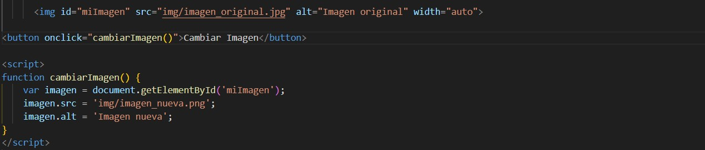

Cambiar la imagen con JavaScript
Código empleado:
Explicación:
El código compone una pequeña interfaz de usuario con una imagen y un botón. La imagen muestra inicialmente una fotografía denominada "imagen_original.jpg". El botón, etiquetado como "Cambiar Imagen", está programado para realizar una acción cuando se hace clic en él.
La parte de JavaScript del código, que está incluida en un bloque de <script>, define una función que se activa cuando el usuario interactúa con el botón. Esta función busca la imagen en la página usando su identificador único y luego cambia la fuente de la imagen a "imagen_nueva.png", que es otra fotografía. Además, la descripción alternativa de la imagen (utilizada para accesibilidad y cuando la imagen no se puede mostrar) también se actualiza para reflejar que la imagen ha cambiado.
En esencia, el código permite a los usuarios cambiar la imagen que se muestra en la página con solo hacer clic en un botón, demostrando una interacción dinámica en la web usando JavaScript.